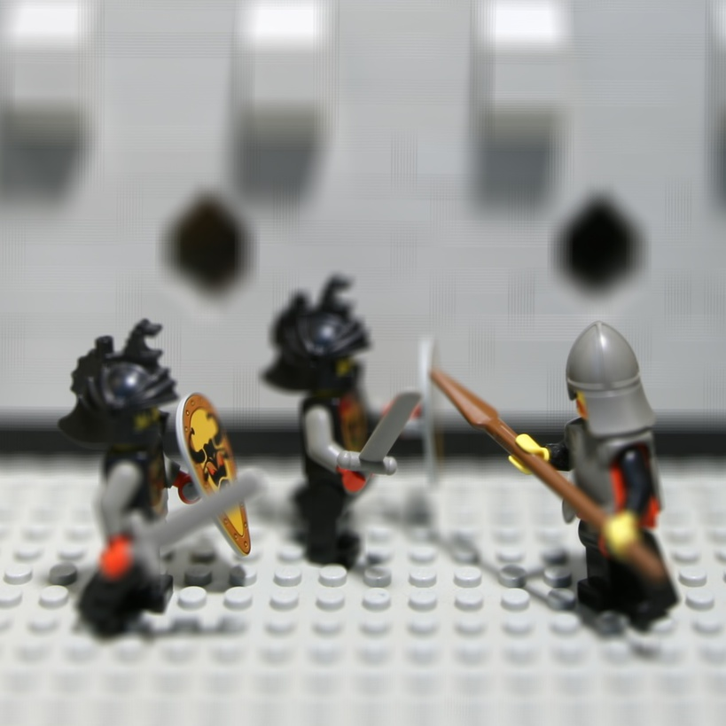

The goal of this project is to use lightfield data taken from the Stanford Light Field Archive and computationally change the depth at which the image is focused and adjust the aperture. Unfortunately, due to size constraints of the website upload, I can only present one scene, a lego castle. The data provided comprises of 289 sub-aperture images (in a 17 by 17 grid) which I use in my computation to acheive the desired results.
The first part of the project involves refocusing the image at different depths. In order to display the results most noticeably, I used all of the sub-aperture images. This corresponds to the largest possible aperture which results in a shallow depth of field.
To actually refocus at different depths, I implemented the shift-and-add algorithm. For each sub-aperture image I(x,y), I found the absolute (u,v) coordinates corresponding to that sub-aperture image (was provided in the image filename) and then shifted it by Δ(x,y) = c*(u,v). Finally, I averaged these shifted sub-aperture images together. This process is the simple shift-and-add algorithm. The value of c determines the focus depth for the resulting image. A c value of 0 is the same focus depth as the physical focus. The sign of c determines whether you are refocusing nearer or farther from the pysical focus and a c value farther from 0 refocuses further from the physical focus.
Below you can see my results. When viewing the images left to right, both the lego castle is refocused from far to near. You can also see the depth refocusing of the scene in animated gif form.
|
The second part of the project involves computationally adjusting the aperture. Averaging a large number of images sampled over the grid perpendicular to the optical axis mimics a camera with a much larger aperture. This is because the parts of the images that are in physical focus will be in the same location across all of those images, however, the parts not in the the physical focus get blurred by the average.
I computationally adjusted the aperture by using the sub-aperture data from Stanford Light Field Archive. Because the sub-aperture images were in a 17 by 17 grid (indexed 0 to 16), I used the sub-aperture with relative (u,v) coordinates of (8,8) as my center. I measured my aperture size by a radius from this center. An image with a radius of 0 only included the sub-aperture image (8,8). An image with a radius of 1 included the sub-aperture image (8,8) as well as all sub-aperture images bordering it up, down, left, right, or diagonally. This extrapolates to images with larger radii.
Think of a king on a chessboard in location (8,8). An image with radius 1 averages its current position and all positions the king can get to in 1 move. An image with radius 2 averages all positions the king can get to in 2 moves, and so on. The largest possible aperture has radius 8, and averages all sub-aperture images. It is important to note that all of these resultant images are focused at a depth that is the same as the pysical focus depth.
Below you can see my results. When viewing the images left to right, the lego castle goes from smallest to largest aperture. The smaller the aperture is, the larger the depth of field (resulting in more of the image that is in focus). You can also see the aperture adjustment of the scene in animated gif form.
|  |
 |
This project was very interesting. It was also surprisingly easy to implement when the sub-aperture images are provided in such a clean way. From this project, I learned how to computationally refocus the depth and adjust the aperture when provided with sub-aperture images from light field data.